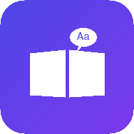

iPhone 专属 · 免费 · 无需 App Store
请使用 iPhone 自带的 Safari 浏览器（其他浏览器也能用，但 Safari 支持最完整）。
位于 Safari 底部中间的方框向上箭头图标 ⬆️。
图标预览会显示 LinguaFlow 标志，名称可自行修改。
回到桌面即可看到 LinguaFlow 图标，像普通 App 一样点击使用。
主屏幕版本就是网页端本身，功能一个不少：
App Store 上架需要 Apple 开发者账号（每年 688 元）并通过审核。这个方式完全免费，功能与 App 无异，只是安装入口不同。
无需手动操作。每次打开会自动检查更新；也可在应用内下拉刷新或彻底关闭后重新打开。新功能上线后 1-2 天内自动生效。
能。首次打开后核心页面、图标、每日内容都已缓存到手机。仅「在线词典」「拍照识别」等联网功能需要网络。
存在 iPhone 本地。删除主屏幕图标（长按 → 移除 App）会同时清除该应用数据，请先备份重要笔记。
iPhone 上所有浏览器都是同一内核，功能可用；但只有 Safari 能「添加到主屏幕」并全屏运行，推荐用 Safari。
能。添加时在名称输入框里改成任意名字，例如「LinguaFlow 英语德语」。